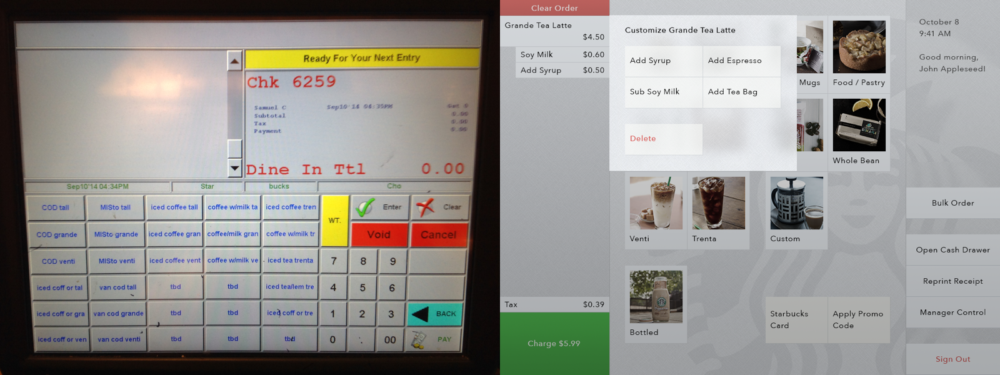
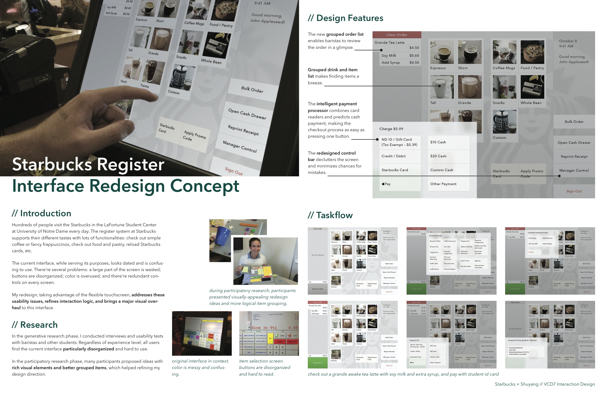

design a modern touch interface that’s beautiful, easy to understand, and quick to operate
For the Interaction Design class at Notre Dame, I evaluated, redesigned, and prototyped the starbucks cash register user interface as a course project.
 Left: existing user interfaceAside from looking messy and dated, the existing interface has three main issues: it doesn’t have a clear logical ordering of items; the labels are intentionally shortened and thus very confusing; the colors have no meaning. I mainly addressed these issues with my redesign, and used layers on the interface to help users understand its structure.
Because of the traffic throughput in Starbucks, I also made sure the interface is quick to operate by using animations minimally, and the buttons consistently appear in the same places, so baristas can build muscle memories of button sequences.
 Concept presentationA functional, interactive prototype of this register is live on my website (best on an iPad). Also, check out my course documentation for more details about the Interaction Design course as well as a journal for this project.